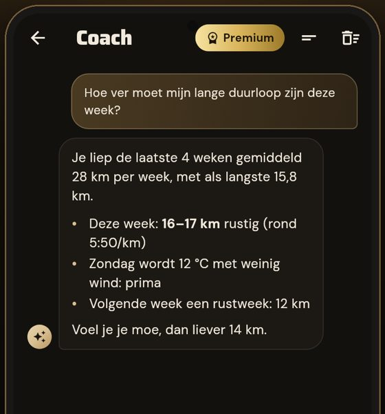

Hardloop-app · Android · 1 december 2026
Loop op het beste moment.
Kadans combineert het weer, de wind op je route, de buienradar en je eigen runs, en vertelt je per 5 minuten wanneer je het best kunt vertrekken.
Eén app, drie bronnen
Minder gokken met het weer.
De meeste loop-apps vertellen je achteraf hoe het ging. Kadans helpt je vooraf: het weer, je route en je eigen prestaties versterken elkaar. Hoe meer je loopt, hoe beter Kadans weet wat voor jou werkt.
Bekijk hoe het werktZo werkt Kadans
Drie stappen. De eerste duurt een minuut, de rest gaat vanzelf.
-
01
Koppel je runs
Via je horloge (Garmin, Samsung, Fitbit en meer via Health Connect), Strava, een GPX-bestand of met de hand.
-
02
Kies route en training
Rustig, tempo, lang of herstel, op je eigen rondje. Na 8 runs weet Kadans bij welk weer jij het best presteert.
-
03
Vertrek op tijd
Per 5 minuten berekend, met de buien van de komende 2 uur en de wind op je route erbij.
- Wind op jouw routeTegen- of rugwind per kilometer, zodat je de wind op het eind in je rug hebt.
- Jouw loopprofielBij welke temperatuur en wind jij het snelst bent.
- WedstrijddoelenVerwachte eindtijd met het weer van de wedstrijddag.
- Coachstem tijdens je runKies Daan, Bram, Emma of Fleur voor je tussentijden.
- Samen lopenLoopgroepen met een eigen agenda, reacties en stappenwedstrijd.
- AI-coachPremiumKent je runs, je wedstrijd en het weer van de komende dagen.

Over Kadans
Gemaakt door een hardloper uit Barneveld.
Kadans begon met een simpele ergernis: net de deur uit, en dan de bui. Of een uur later droog en windstil. Daarom rekent Kadans het voor je uit, met open weerdata, de buienradar en kaarten van het Kadaster.
Geen advertenties, geen verkoop van je gegevens. Alleen jij ziet je runs.
Gratis beginnen
Premium als je meer wilt. Wat gratis is, blijft gratis.
Gratis
- Beste vertrektijd, per 5 minuten berekend
- Live buien en wind op je route
- Persoonlijk loopprofiel
- Wedstrijddoelen en horloge-koppeling
- 3 proefvragen aan de coach
Prijs omhoog? Dan hoor je het ruim van tevoren. Je runs exporteren kan altijd.
Premium
- Alles van Gratis
- AI-coach die je runs en wedstrijd kent
- Weekschema's richting je doel
- Of €40 per jaar: 4 maanden voordeliger
Eerste maand gratis, daarna automatisch verlengd. Opzeggen kan altijd in Google Play.
Veelgestelde vragen
Waarom niet gewoon Strava?
Gebruik Strava gerust voor je vrienden en ranglijsten. Strava laat zien wat je liep; Kadans helpt je vóór je run. Ze werken mooi samen.
Heb ik een horloge nodig?
Nee. Je kunt runs ook met je telefoon opnemen, met de hand invoeren of een GPX-bestand uploaden. Met een horloge gaat het vanzelf.
Op welke telefoons werkt het?
Kadans komt eerst voor Android. iPhone volgt later.
Wat doen jullie met mijn gegevens?
Alleen jij ziet je runs. We verkopen niets en tonen geen advertenties. Je kunt alles inzien en je account verwijderen via je profiel. Zie de privacyverklaring.